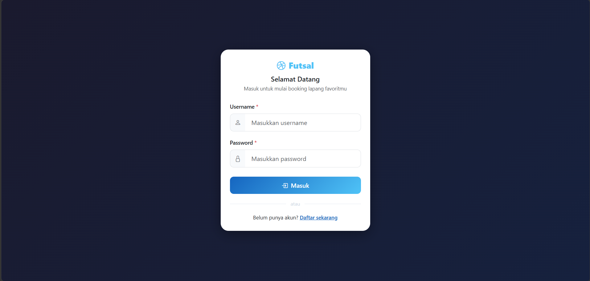
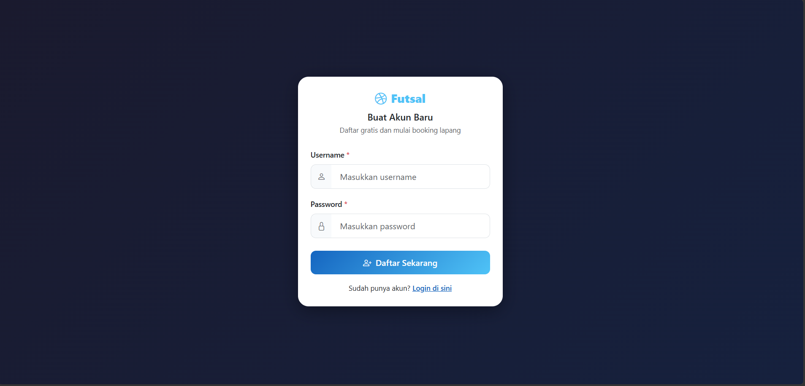
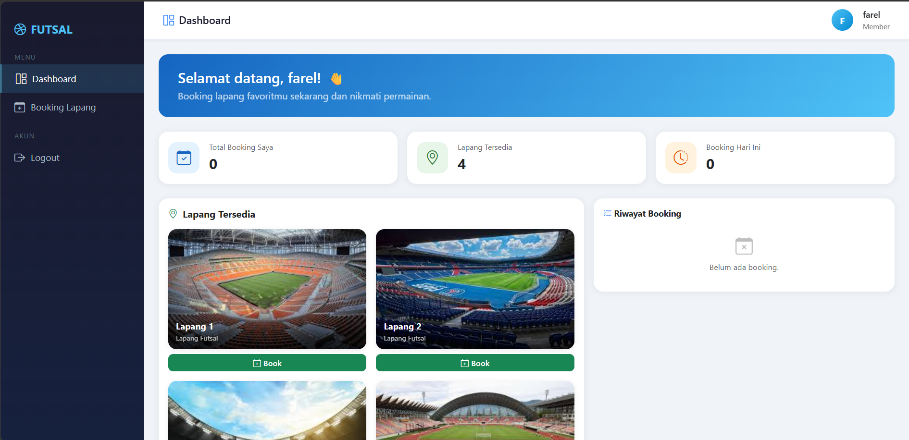
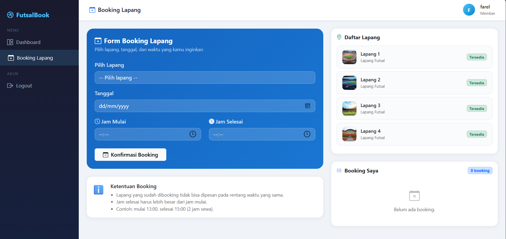
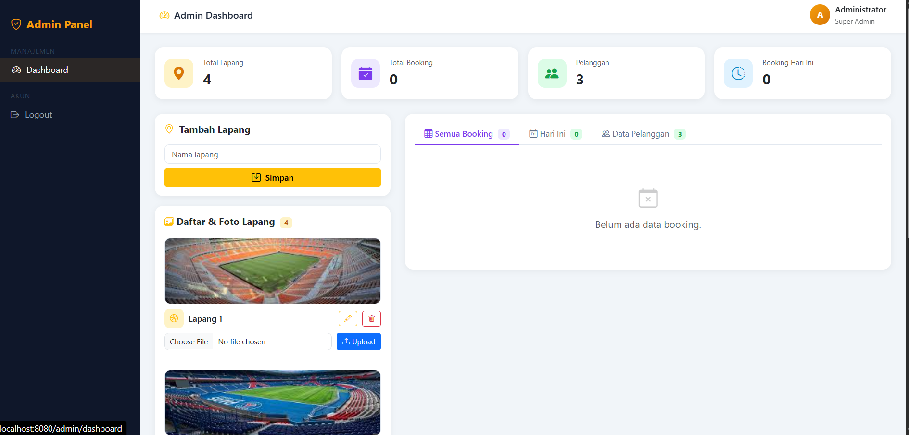
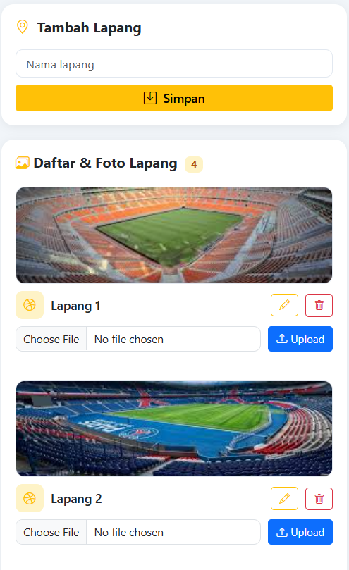
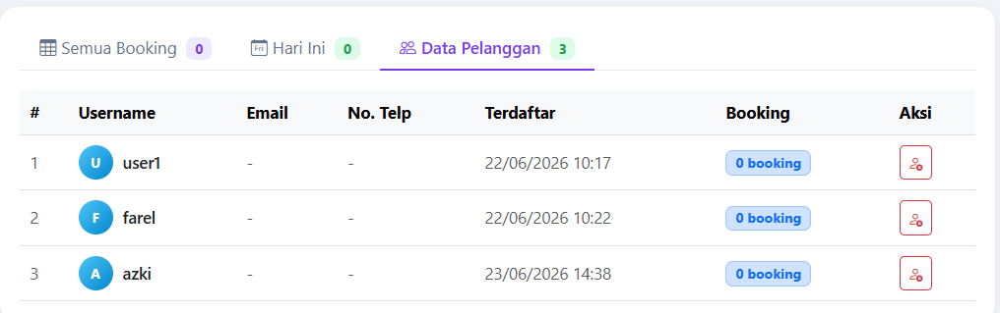
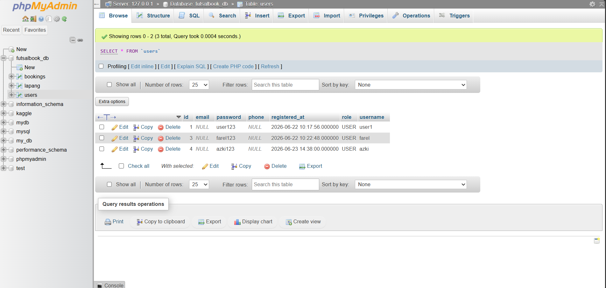

Tugas Besar • Algoritma & Pemrograman
FutsalBook
Buku Tutorial Aplikasi Web Booking Lapang Futsal
Berbasis Spring Boot & MySQL
Disusun oleh
Farel Muhammad Hodoril Anam
Program Studi Teknik Informatika | 2025 / 2026
Teknologi: Java 21 · Spring Boot 3.2 · MySQL · Thymeleaf · Bootstrap 5
BAB 1 — Pendahuluan
BAB 2 — Tools & Konfigurasi
BAB 3 — Struktur Proyek & Cara Kerja Aplikasi
BAB 4 — Cara Menjalankan Proyek
BAB 5 — Penutup
1.1 Latar Belakang
Olahraga futsal semakin populer di Indonesia. Hampir setiap kota memiliki puluhan lapangan futsal yang beroperasi setiap hari. Namun proses pemesanan lapangan (booking) masih sering dilakukan secara konvensional — melalui telepon, WhatsApp, atau datang langsung ke lokasi. Cara ini tidak efisien karena:
- Pelanggan harus menghubungi pengelola satu per satu untuk mengecek ketersediaan.
- Tidak ada riwayat booking yang tersimpan secara terstruktur.
- Pengelola kesulitan memantau jadwal penggunaan lapangan secara real-time.
- Risiko double-booking (dua penyewa memesan slot yang sama) sangat tinggi.
Aplikasi FutsalBook hadir sebagai solusi digital berbasis web yang memungkinkan pelanggan melakukan booking lapangan secara mandiri, kapan saja dan di mana saja, serta memudahkan admin dalam mengelola data lapangan, pelanggan, dan jadwal.
1.2 Permasalahan
Berdasarkan latar belakang di atas, masalah utama yang diselesaikan oleh FutsalBook adalah:
| # | Masalah | Dampak |
|---|
| 1 | Booking masih manual (telepon / WA) | Lambat, tidak efisien, rawan human error |
| 2 | Tidak ada sistem konflik jadwal | Double-booking, pelanggan kecewa |
| 3 | Admin tidak punya dashboard terpusat | Sulit memantau booking harian |
| 4 | Data pelanggan tidak terorganisir | Tidak bisa analitik atau follow-up |
| 5 | Tidak ada persistensi data digital | Data hilang jika buku/WA rusak |
1.3 Batasan Masalah & Solusi
📌 Batasan Masalah
Aplikasi ini fokus pada fitur inti booking lapangan. Pembayaran online, notifikasi email/SMS, dan rating lapangan tidak termasuk dalam scope tugas besar ini.
| Batasan | Solusi yang Diterapkan |
|---|
| Hanya lapangan futsal indoor | Data lapang dikelola oleh admin via dashboard |
| Satu akun = satu peran (USER / ADMIN) | Peran ditentukan saat registrasi, admin hardcoded |
| Deteksi konflik berdasarkan lapangId + tanggal + jam | Query JPQL custom isAvailable() di repository |
| Password disimpan plain text (tidak di-hash) | Cukup untuk lingkungan demo/akademik |
| Foto lapang disimpan di disk lokal (/uploads) | WebConfig meng-expose folder via URL /uploads/** |
1.4 Tujuan Aplikasi
1
Menyediakan platform booking online — pelanggan dapat memesan lapangan kapan saja tanpa perlu menelepon pengelola.
2
Mencegah double-booking — sistem otomatis menolak pesanan jika lapangan sudah terisi pada rentang waktu yang sama.
3
Menyediakan dashboard admin — pengelola dapat memantau seluruh booking, mengelola lapangan, mengupload foto, dan mengelola akun pelanggan.
4
Persistensi data dengan MySQL — data tidak hilang saat aplikasi di-restart; semua tersimpan di database relasional.
| Software | Versi | Fungsi | Download |
|---|
| Java JDK | 21 (LTS) | Runtime & compiler Java | adoptium.net |
| VS Code | 1.90+ | IDE / editor kode | code.visualstudio.com |
| XAMPP | 8.2+ | MySQL + phpMyAdmin server lokal | apachefriends.org |
| Git | 2.44+ | Version control | git-scm.com |
| Maven Wrapper | 3.9.8 | Build tool (sudah include di proyek) | — (bundled) |
| Extension Pack for Java | latest | VS Code extension untuk Java | VS Code Marketplace |
| Spring Boot Dashboard | latest | Run Spring Boot dari VS Code | VS Code Marketplace |
2.2 Instalasi Java 21 (JDK)
1
Buka browser, kunjungi https://adoptium.net dan pilih Temurin 21 (LTS) sesuai OS (Windows x64).
2
Download installer .msi dan jalankan. Centang opsi "Set JAVA_HOME variable" dan "Add to PATH".
3
Verifikasi di Command Prompt / PowerShell:
java -version
# Output yang diharapkan:
openjdk version "21.0.x" ...
javac 21.0.x
⚠️ Catatan
Pastikan versi Java minimal 21 karena aplikasi ini menggunakan maven.compiler.release=21 dan Spring Boot 3.2. Java 17 mungkin tidak kompatibel.
2.3 Setup VS Code untuk Java & Spring Boot
1
Download dan install VS Code dari https://code.visualstudio.com.
2
Buka VS Code → tekan
Ctrl+Shift+X → install extension berikut:
- Extension Pack for Java (Microsoft) — bundle 6 extension Java
- Spring Boot Extension Pack (VMware) — Spring Boot Dashboard + Tools
- Lombok Annotations Support (optional)
3
Konfigurasi JDK di VS Code: tekan Ctrl+Shift+P → ketik "Java: Configure Java Runtime" → pilih JDK 21.
4
Buka folder proyek: File → Open Folder → pilih folder web.
5
VS Code akan otomatis mendeteksi proyek Maven dan men-download dependency. Tunggu hingga progress bar di bawah selesai.
Konfigurasi settings.json (opsional tapi direkomendasikan)
{
"java.jdt.ls.java.home": "C:\\Program Files\\Eclipse Adoptium\\jdk-21...",
"java.compile.nullAnalysis.mode": "disabled",
"editor.formatOnSave": true,
"editor.tabSize": 4
}
2.4 Setup XAMPP & phpMyAdmin (MySQL)
1
Download XAMPP dari https://www.apachefriends.org → pilih versi PHP 8.2.
2
Install ke C:\xampp (default). Saat instalasi, pastikan MySQL dan phpMyAdmin dicentang.
3
Buka XAMPP Control Panel → klik Start pada baris MySQL. Status akan berubah hijau.
4
Verifikasi MySQL berjalan: buka browser → http://localhost/phpmyadmin. Tampilan phpMyAdmin harus muncul.
5
Konfigurasi default XAMPP MySQL yang digunakan aplikasi:
| Parameter | Nilai |
|---|
| Host | localhost |
| Port | 3306 |
| Username | root |
| Password | (kosong) |
✅ Database Dibuat Otomatis
Saat aplikasi Spring Boot pertama kali dijalankan, database futsalbook_db dan seluruh tabelnya akan dibuat otomatis berkat konfigurasi createDatabaseIfNotExist=true dan ddl-auto=update.
2.5 Git & GitHub
1
Download Git dari https://git-scm.com dan install dengan pengaturan default.
2
Konfigurasi identitas Git di terminal:
git config --global user.name "Nama Anda"
git config --global user.email "email@anda.com"
3
Buat akun di https://github.com, lalu buat repository baru bernama futsalbook.
4
Push proyek ke GitHub:
git init
git add .
git commit -m "initial commit: FutsalBook Spring Boot"
git remote add origin https://github.com/USERNAME/futsalbook.git
git push -u origin main
2.6 Maven Wrapper
Proyek sudah dilengkapi Maven Wrapper (mvnw.cmd), sehingga Anda tidak perlu menginstall Maven secara terpisah. Maven akan didownload otomatis saat pertama kali dijalankan.
# Windows CMD / PowerShell
mvnw.cmd clean compile # compile saja
mvnw.cmd spring-boot:run # compile + jalankan
mvnw.cmd clean package # buat file JAR
3.1 Struktur Direktori Proyek
web/
├── src/main/java/com/tugas/web/
│ ├── config/
│ │ └── WebConfig.java ← resource handler /uploads/**
│ ├── controller/
│ │ ├── AuthController.java ← login, logout
│ │ ├── UserController.java ← register, dashboard, booking
│ │ ├── AdminController.java ← CRUD lapang, user, booking admin
│ │ └── HomeController.java ← redirect / ke /login
│ ├── model/
│ │ ├── User.java ← @Entity tabel users
│ │ ├── Lapang.java ← @Entity tabel lapang
│ │ └── Booking.java ← @Entity tabel bookings
│ ├── repository/ ← NEW: JPA Repositories
│ │ ├── UserRepository.java
│ │ ├── LapangRepository.java
│ │ └── BookingRepository.java
│ ├── service/
│ │ └── AppDataService.java ← business logic + data access
│ └── WebApplication.java ← entry point @SpringBootApplication
├── src/main/resources/
│ ├── application.properties ← config datasource, JPA, multipart
│ └── templates/
│ ├── login.html
│ ├── register.html
│ ├── home.html ← halaman booking lapang
│ ├── dashboard.html ← dashboard pelanggan
│ └── admin-dashboard.html ← dashboard admin (tab)
├── uploads/ ← foto lapang (lapang-1.jpg, dll)
└── pom.xml ← dependencies Maven
3.2 Arsitektur Aplikasi (MVC + Repository Pattern)
Aplikasi mengikuti pola MVC (Model-View-Controller) yang diperluas dengan Repository Pattern untuk akses database.
Alur Request → Response
🌐 Browser (HTML Form)
↕ HTTP Request/Response
🎮 Controller Layer (AuthController, UserController, AdminController)
↕ Method calls
⚙️ Service Layer (AppDataService)
↕ Repository calls
🗄️ Repository Layer (JpaRepository interfaces)
↕ JPQL / SQL
💾 MySQL Database (via Hibernate/JPA)
Dependencies Utama (pom.xml)
<dependencies>
<!-- Web MVC -->
<dependency>
<groupId>org.springframework.boot</groupId>
<artifactId>spring-boot-starter-web</artifactId>
</dependency>
<!-- Thymeleaf Template Engine -->
<dependency>
<groupId>org.springframework.boot</groupId>
<artifactId>spring-boot-starter-thymeleaf</artifactId>
</dependency>
<!-- JPA / Hibernate -->
<dependency>
<groupId>org.springframework.boot</groupId>
<artifactId>spring-boot-starter-data-jpa</artifactId>
</dependency>
<!-- MySQL Connector -->
<dependency>
<groupId>com.mysql</groupId>
<artifactId>mysql-connector-j</artifactId>
<scope>runtime</scope>
</dependency>
</dependencies>
3.3 Koneksi ke Database MySQL
Konfigurasi koneksi database dilakukan di file application.properties. Spring Boot akan membaca file ini saat startup dan mengkonfigurasi koneksi secara otomatis.
File: src/main/resources/application.properties
# ─── Thymeleaf ────────────────────────────
spring.thymeleaf.cache=false
# ─── Upload File ──────────────────────────
spring.servlet.multipart.enabled=true
spring.servlet.multipart.max-file-size=5MB
spring.servlet.multipart.max-request-size=5MB
# ─── MySQL (XAMPP) ────────────────────────
spring.datasource.url=jdbc:mysql://localhost:3306/futsalbook_db\
?createDatabaseIfNotExist=true&useSSL=false&serverTimezone=Asia/Jakarta
spring.datasource.username=root
spring.datasource.password=
spring.datasource.driver-class-name=com.mysql.cj.jdbc.Driver
# ─── JPA / Hibernate ──────────────────────
spring.jpa.hibernate.ddl-auto=update # buat/update tabel otomatis
spring.jpa.show-sql=true # tampilkan SQL di console
spring.jpa.properties.hibernate.dialect=org.hibernate.dialect.MySQLDialect
spring.jpa.properties.hibernate.format_sql=true
💡 Penjelasan Parameter Penting
createDatabaseIfNotExist=true — MySQL otomatis membuat database futsalbook_db jika belum ada.ddl-auto=update — Hibernate otomatis membuat atau mengupdate struktur tabel berdasarkan entity class.show-sql=true — Setiap query yang dieksekusi dicetak di console, berguna untuk debugging.
Serve File Upload (WebConfig.java)
Secara default Spring Boot tidak otomatis meng-expose folder di luar resources/static. File WebConfig.java menambahkan resource handler agar foto yang diupload bisa diakses via URL /uploads/nama-file.jpg.
@Configuration
public class WebConfig implements WebMvcConfigurer {
@Override
public void addResourceHandlers(ResourceHandlerRegistry registry) {
Path uploadDir = Paths.get("uploads");
String uploadPath = uploadDir.toAbsolutePath().toUri().toString();
registry.addResourceHandler("/uploads/**")
.addResourceLocations(uploadPath + "/");
}
}
3.4 Model / Entity JPA
Setiap class model dikonversi menjadi JPA Entity sehingga Hibernate dapat memetakannya ke tabel database secara otomatis.
User.java — Tabel users
@Entity
@Table(name = "users")
public class User {
@Id
@GeneratedValue(strategy = GenerationType.IDENTITY)
private Long id; // auto-increment
@Column(unique = true, nullable = false)
private String username;
@Column(nullable = false)
private String password;
@Column(nullable = false)
private String role; // "USER" atau "ADMIN"
private String email;
private String phone;
@Column(name = "registered_at")
private LocalDateTime registeredAt;
// Helper method — tidak di-persist ke DB
public String getUsernameInitial() {
if (username == null || username.isEmpty()) return "?";
return username.substring(0, 1).toUpperCase();
}
}
Lapang.java — Tabel lapang
@Entity
@Table(name = "lapang")
public class Lapang {
@Id
@GeneratedValue(strategy = GenerationType.IDENTITY)
private Long id;
@Column(nullable = false)
private String name;
@Column(name = "photo_path")
private String photoPath; // e.g. "lapang-1.jpg"
// Menghasilkan URL foto dengan fallback ke placeholder
public String getPhotoUrl() {
if (photoPath == null || photoPath.isBlank()) {
return "https://placehold.co/400x220/1a1a2e/4fc3f7?text="
+ name.replace(" ", "+");
}
return "/uploads/" + photoPath;
}
}
Booking.java — Tabel bookings
@Entity
@Table(name = "bookings")
public class Booking {
@Id
@GeneratedValue(strategy = GenerationType.IDENTITY)
private Long id;
@Column(name = "lapang_id", nullable = false) private Long lapangId;
@Column(name = "lapang_name", nullable = false) private String lapangName;
@Column(nullable = false) private String username;
@Column(nullable = false) private LocalDate date;
@Column(name = "start_time", nullable = false) private LocalTime startTime;
@Column(name = "end_time", nullable = false) private LocalTime endTime;
@Column(name = "created_at") private LocalDateTime createdAt;
}
3.5 Repository Layer
Setiap entity memiliki interface repository yang meng-extend JpaRepository. Spring Data JPA otomatis mengimplementasikan CRUD dasar, serta query yang diderivasi dari nama method.
UserRepository.java
@Repository
public interface UserRepository extends JpaRepository<User, Long> {
Optional<User> findByUsername(String username);
Optional<User> findByUsernameAndPassword(String username, String password);
boolean existsByUsername(String username);
List<User> findByRole(String role);
}
BookingRepository.java — dengan Custom Query
@Repository
public interface BookingRepository extends JpaRepository<Booking, Long> {
List<Booking> findByUsernameOrderByCreatedAtDesc(String username);
List<Booking> findByDateOrderByStartTimeAsc(LocalDate date);
List<Booking> findAllByOrderByCreatedAtDesc();
// Query JPQL untuk cek konflik jadwal
@Query("SELECT CASE WHEN COUNT(b) > 0 THEN false ELSE true END " +
"FROM Booking b WHERE b.lapangId = :lapangId AND b.date = :date " +
"AND b.startTime < :endTime AND :startTime < b.endTime")
boolean isAvailable(@Param("lapangId") Long lapangId,
@Param("date") LocalDate date,
@Param("startTime") LocalTime startTime,
@Param("endTime") LocalTime endTime);
}
💡 Logika Deteksi Konflik Jadwal
Query isAvailable() menggunakan kondisi interval overlap: dua interval [A, B) dan [C, D) saling tumpang tindih jika A < D AND C < B. Jika ada booking yang tumpang tindih → return false (tidak tersedia).
3.6 Service Layer — AppDataService.java
Service adalah jembatan antara controller dan repository. Semua logika bisnis ditaruh di sini.
Struktur Kelas & Inisialisasi Data
@Service
public class AppDataService {
@Autowired private LapangRepository lapangRepository;
@Autowired private UserRepository userRepository;
@Autowired private BookingRepository bookingRepository;
// Dijalankan satu kali saat aplikasi start
@PostConstruct
public void init() {
if (lapangRepository.count() == 0) {
lapangRepository.save(new Lapang("Lapang 1"));
lapangRepository.save(new Lapang("Lapang 2"));
lapangRepository.save(new Lapang("Lapang 3"));
lapangRepository.save(new Lapang("Lapang 4"));
}
if (userRepository.count() == 0) {
userRepository.save(new User("user1", "user123", "USER"));
}
}
}
Method Penting: addBooking()
@Transactional
public void addBooking(Long lapangId, String username,
LocalDate date, LocalTime start, LocalTime end) {
String lapangName = findLapangById(lapangId)
.map(Lapang::getName)
.orElse("Lapang tidak ditemukan");
Booking booking = new Booking(lapangId, lapangName, username, date, start, end);
bookingRepository.save(booking); // ← tersimpan ke MySQL
}
Method Penting: isLapangAvailable()
public boolean isLapangAvailable(Long lapangId, LocalDate date,
LocalTime start, LocalTime end) {
return bookingRepository.isAvailable(lapangId, date, start, end);
}
Method Upload Foto
@Transactional
public void updateLapangPhoto(Long lapangId, String photoPath) {
findLapangById(lapangId).ifPresent(l -> {
l.setPhotoPath(photoPath);
lapangRepository.save(l); // ← update photo_path di DB
});
}
3.7 Controller Auth — Login & Logout
File AuthController.java menangani autentikasi. Admin dikenali dengan credential hardcoded; pelanggan dicek via database.
@Controller
public class AuthController {
// GET /login — jika sudah login, redirect langsung
@GetMapping("/login")
public String loginPage(Model model, HttpSession session) {
if (session.getAttribute("username") != null) {
if ("ADMIN".equals(session.getAttribute("userRole")))
return "redirect:/admin/dashboard";
return "redirect:/dashboard";
}
return "login";
}
// POST /proses-login
@PostMapping("/proses-login")
public String login(@RequestParam String username,
@RequestParam String password,
Model model, HttpSession session) {
// Cek admin hardcoded
if ("admin".equals(username) && "admin123".equals(password)) {
session.setAttribute("username", username);
session.setAttribute("userRole", "ADMIN");
return "redirect:/admin/dashboard";
}
// Cek user di database
var userOpt = appDataService.findUser(username, password);
if (userOpt.isPresent()) {
session.setAttribute("username", username);
session.setAttribute("userRole", "USER");
return "redirect:/dashboard";
}
model.addAttribute("errorMessage", "Username atau password salah.");
return "login";
}
// GET /logout — invalidasi session
@GetMapping("/logout")
public String logout(HttpSession session) {
session.invalidate();
return "redirect:/login";
}
}
3.8 Controller User — Register, Dashboard, & Booking
Register — mencegah duplikasi username
@PostMapping("/proses-register")
public String prosesRegister(@ModelAttribute User user,
Model model, RedirectAttributes ra) {
// Validasi input tidak kosong
if (user.getUsername().isBlank() || user.getPassword().isBlank()) {
model.addAttribute("errorMessage", "Username dan password wajib diisi.");
return "register";
}
// Cek duplikasi username di database
if (appDataService.existsUser(user.getUsername())) {
model.addAttribute("errorMessage", "Username sudah terdaftar.");
return "register";
}
user.setRole("USER");
appDataService.addUser(user); // ← simpan ke MySQL
ra.addFlashAttribute("successMessage", "Registrasi berhasil!");
return "redirect:/login";
}
Booking — alur penuh dengan cek konflik
@PostMapping("/booking")
public String createBooking(@RequestParam Long lapangId,
@RequestParam String date,
@RequestParam String startTime,
@RequestParam String endTime,
HttpSession session,
RedirectAttributes ra) {
String username = (String) session.getAttribute("username");
LocalDate bookingDate = LocalDate.parse(date);
LocalTime start = LocalTime.parse(startTime);
LocalTime end = LocalTime.parse(endTime);
// Validasi: end harus setelah start
if (!end.isAfter(start)) {
ra.addFlashAttribute("errorMessage", "Jam selesai harus setelah jam mulai.");
return "redirect:/home";
}
// Cek ketersediaan lapang di database
if (!appDataService.isLapangAvailable(lapangId, bookingDate, start, end)) {
ra.addFlashAttribute("errorMessage", "Lapang sudah dibooking pada waktu tersebut.");
return "redirect:/home";
}
appDataService.addBooking(lapangId, username, bookingDate, start, end);
ra.addFlashAttribute("successMessage", "Booking berhasil dikonfirmasi!");
return "redirect:/home";
}
3.9 Controller Admin — AdminController.java
Semua endpoint admin diproteksi method isAdmin() yang mengecek nilai session userRole.
Upload Foto Lapangan
@PostMapping("/lapang/upload-photo")
public String uploadPhoto(@RequestParam Long lapangId,
@RequestParam MultipartFile photo,
HttpSession session,
RedirectAttributes ra) {
if (!isAdmin(session)) return "redirect:/login";
// Validasi ekstensi file
String ext = originalFilename.substring(originalFilename.lastIndexOf(".")).toLowerCase();
if (!ext.matches("\\.(jpg|jpeg|png|gif|webp)")) {
ra.addFlashAttribute("message", "Format harus JPG, PNG, GIF, atau WebP.");
return "redirect:/admin/dashboard";
}
Path uploadPath = Paths.get("uploads");
Files.createDirectories(uploadPath); // buat folder jika belum ada
String fileName = "lapang-" + lapangId + ext;
Path filePath = uploadPath.resolve(fileName);
Files.copy(photo.getInputStream(), filePath, StandardCopyOption.REPLACE_EXISTING);
appDataService.updateLapangPhoto(lapangId, fileName); // ← update DB
ra.addFlashAttribute("message", "Foto berhasil diupload.");
return "redirect:/admin/dashboard";
}
populateModel() — Data Dashboard Admin
private void populateModel(Model model) {
// Hitung jumlah booking per user (untuk kolom di tabel pelanggan)
Map<String, Long> countMap = appDataService.getBookings().stream()
.collect(Collectors.groupingBy(Booking::getUsername, Collectors.counting()));
model.addAttribute("lapangs", appDataService.getLapangs());
model.addAttribute("bookings", appDataService.getBookings());
model.addAttribute("bookingsToday", appDataService.getBookingsToday());
model.addAttribute("users", appDataService.getUsers());
model.addAttribute("bookingCountMap", countMap);
}
3.10 Template Thymeleaf — Tampilan Antarmuka
Semua halaman menggunakan Thymeleaf sebagai template engine yang terintegrasi dengan Spring Boot, dan Bootstrap 5 sebagai framework CSS.
Integrasi Thymeleaf dengan Spring Model
<!-- Menampilkan data dari model -->
<div th:text="${username}">User</div>
<!-- Loop data lapang -->
<div th:each="lapang : ${lapangs}">
<span th:text="${lapang.name}"></span>
<img th:src="${lapang.photoUrl}" .../>
</div>
<!-- Conditional rendering -->
<div th:if="${errorMessage}" class="alert alert-danger">
<span th:text="${errorMessage}"></span>
</div>
<!-- Form post dengan action otomatis menggunakan th:action -->
<form th:action="@{/booking}" method="POST">
<select name="lapangId">
<option th:each="l : ${lapangs}"
th:value="${l.id}"
th:text="${l.name}"></option>
</select>
</form>
Skema Halaman Aplikasi
| URL | Controller | Template | Akses |
|---|
/ | HomeController | redirect /login | Semua |
/login | AuthController | login.html | Semua |
/register | UserController | register.html | Semua |
/dashboard | UserController | dashboard.html | USER saja |
/home | UserController | home.html | USER saja |
/admin/dashboard | AdminController | admin-dashboard.html | ADMIN saja |
POST /booking | UserController | redirect /home | USER saja |
POST /admin/lapang/upload-photo | AdminController | redirect /admin | ADMIN saja |
Skema Database
Tabel: users |
|---|
| Kolom | Tipe | Constraint | Keterangan |
|---|
| id | BIGINT | PK, AUTO_INCREMENT | Primary key otomatis |
| username | VARCHAR(255) | UNIQUE, NOT NULL | Nama pengguna unik |
| password | VARCHAR(255) | NOT NULL | Password plain text |
| role | VARCHAR(50) | NOT NULL | "USER" atau "ADMIN" |
| email | VARCHAR(255) | NULL | Opsional |
| registered_at | DATETIME | NULL | Waktu registrasi |
Tabel: lapang |
|---|
| Kolom | Tipe | Constraint | Keterangan |
|---|
| id | BIGINT | PK, AUTO_INCREMENT | Primary key |
| name | VARCHAR(255) | NOT NULL | Nama lapangan |
| photo_path | VARCHAR(500) | NULL | Nama file foto, e.g. lapang-1.jpg |
Tabel: bookings |
|---|
| Kolom | Tipe | Constraint | Keterangan |
|---|
| id | BIGINT | PK, AUTO_INCREMENT | Primary key |
| lapang_id | BIGINT | NOT NULL | Referensi ID lapang |
| lapang_name | VARCHAR(255) | NOT NULL | Denormalisasi nama lapang |
| username | VARCHAR(255) | NOT NULL | Username pemesan |
| date | DATE | NOT NULL | Tanggal booking |
| start_time | TIME | NOT NULL | Jam mulai |
| end_time | TIME | NOT NULL | Jam selesai |
| created_at | DATETIME | NULL | Waktu pemesanan dibuat |
4.1 Clone / Download Proyek
🔗 Repository GitHub
Repository resmi proyek ini tersedia di GitHub berikut.
Opsi A — Clone via Git
git clone https://github.com/mf240007-rgb/Futsal-web.git
cd Futsal-web/web
Opsi B — Download ZIP
1
Buka halaman repository di GitHub.
2
Klik tombol hijau Code → Download ZIP.
3
Ekstrak ZIP ke direktori pilihan Anda.
4
Buka VS Code → File → Open Folder → pilih folder web.
4.2 Persiapan Database
1
Pastikan XAMPP MySQL sudah running (lihat Bab 2.4).
2
Buka phpMyAdmin di http://localhost/phpmyadmin.
3
(Opsional) Jika ingin membuat database secara manual, buka tab
SQL di phpMyAdmin dan jalankan:
CREATE DATABASE IF NOT EXISTS futsalbook_db
CHARACTER SET utf8mb4
COLLATE utf8mb4_unicode_ci;
✅ Tidak Perlu Buat Tabel Manual
Hibernate akan membuat semua tabel secara otomatis saat aplikasi pertama kali dijalankan berkat konfigurasi ddl-auto=update.
Verifikasi Konfigurasi application.properties
Pastikan file src/main/resources/application.properties berisi:
spring.datasource.url=jdbc:mysql://localhost:3306/futsalbook_db\
?createDatabaseIfNotExist=true&useSSL=false&serverTimezone=Asia/Jakarta
spring.datasource.username=root
spring.datasource.password= # kosong untuk XAMPP default
⚠️ Jika MySQL Anda memiliki password, ubah baris spring.datasource.password= menjadi spring.datasource.password=PASSWORD_ANDA.
4.3 Menjalankan Aplikasi
1
Buka terminal di VS Code (Ctrl+`) atau Command Prompt.
2
Masuk ke folder
web:
cd "c:\TUGAS\TUGAS ALGO\tugas besar\web"
3
Jalankan aplikasi:
mvnw.cmd spring-boot:run
4
Tunggu hingga muncul pesan di console:
Started WebApplication in X.XXX seconds (process running for Y)
5
Buka browser dan akses http://localhost:8080.
Akun Bawaan (Seed Data)
| Akun | Username | Password | Keterangan |
|---|
| Admin | admin | admin123 | Hardcoded, tidak di database |
| Demo User | user1 | user123 | Seed otomatis di tabel users |
4.4 Screenshot Aplikasi
Berikut tampilan setiap halaman aplikasi FutsalBook:
Halaman Login
📸 Screenshot: Halaman Login (/login)

Halaman Register
📸 Screenshot: Halaman Register (/register)

Dashboard Pelanggan
📸 Screenshot: Dashboard User (/dashboard)

Halaman Booking Lapang
📸 Screenshot: Booking Lapang (/home)

Dashboard Admin
📸 Screenshot: Dashboard Admin (/admin/dashboard)

Manajemen Lapang (Admin)
📸 Screenshot: Tab Manajemen Lapang di Admin Dashboard

Data Pelanggan (Admin)
📸 Screenshot: Tab Data Pelanggan di Admin Dashboard

Verifikasi Database di phpMyAdmin
📸 Screenshot: Database futsalbook_db di phpMyAdmin

✅ Cara Menambah Screenshot ke Buku
Ganti setiap kotak abu-abu di atas dengan screenshot aktual menggunakan fitur Print Screen atau snipping tool (Win+Shift+S). Simpan sebagai PNG lalu tempel ke dalam file HTML atau Word sebelum di-print ke PDF.
5.1 Kesimpulan
Berdasarkan hasil pembangunan aplikasi FutsalBook, dapat ditarik beberapa kesimpulan sebagai berikut:
1
Aplikasi web booking futsal berhasil dibangun menggunakan ekosistem Spring Boot 3.2 (Java 21) dengan pattern MVC yang terstruktur. Pemisahan antara Controller, Service, Repository, dan Model menghasilkan kode yang mudah dibaca dan dimaintain.
2
Persistensi data berhasil diimplementasikan menggunakan Spring Data JPA dengan MySQL (XAMPP). Sebelumnya data disimpan di ArrayList (hilang saat restart); setelah integrasi JPA, semua data (user, lapang, booking) tersimpan permanen di database relasional.
3
Masalah double-booking berhasil diatasi dengan query JPQL custom menggunakan logika interval overlap. Sistem secara otomatis menolak booking baru jika rentang waktu yang dipilih sudah digunakan oleh booking lain pada lapang dan tanggal yang sama.
4
Manajemen peran (role) berhasil diimplementasikan menggunakan HttpSession. Pelanggan (USER) hanya dapat mengakses halaman booking dan dashboard pribadi. Admin dapat mengakses seluruh data melalui dashboard terpusat.
5
Upload foto lapangan berhasil menggunakan Spring Multipart. File disimpan ke folder uploads/ di disk lokal, dan path-nya disimpan di kolom photo_path pada tabel lapang. WebConfig meng-expose folder ini sebagai resource statis.
6
Antarmuka pengguna yang responsif dibangun menggunakan Bootstrap 5 dan Thymeleaf. Tidak ada JavaScript framework tambahan — semua rendering dilakukan server-side oleh Thymeleaf, menjaga kesederhanaan dan kemudahan debugging.
🎯 Ringkasan Pencapaian
Aplikasi FutsalBook berhasil menyelesaikan seluruh permasalahan yang didefinisikan: booking online, pencegahan double-booking, dashboard admin terpusat, dan persistensi data MySQL. Teknologi yang digunakan (Spring Boot, JPA, Thymeleaf, MySQL) merupakan stack enterprise-grade yang relevan di dunia industri.
5.2 Saran Pengembangan
Berikut rekomendasi pengembangan aplikasi ini ke tahap berikutnya:
🔒 Keamanan (Prioritas Tinggi)
| Isu | Solusi yang Disarankan |
|---|
| Password disimpan plain text | Gunakan BCryptPasswordEncoder dari Spring Security |
| Tidak ada CSRF protection | Aktifkan Spring Security CSRF token |
| Admin credential hardcoded | Pindahkan ke database dengan role ADMIN |
| Tidak ada rate limiting | Tambahkan filter pembatas login attempt |
⚡ Fitur Baru
- Notifikasi Email — kirim konfirmasi booking via email menggunakan Spring Mail + SMTP Gmail.
- Kalender Ketersediaan — tampilkan slot tersedia/terpakai dalam format kalender menggunakan FullCalendar.js.
- Pembayaran Online — integrasi Midtrans atau Xendit untuk pembayaran digital.
- Rating & Review — pelanggan dapat memberi rating lapang setelah booking selesai.
- Export Data — admin dapat mengexport data booking ke format Excel/PDF.
- Manajemen Harga — setiap lapang dapat memiliki harga per jam yang berbeda-beda.
🏗️ Arsitektur & Infrastruktur
- REST API — refactor menjadi backend API (Spring Boot REST) + frontend terpisah (React/Vue.js).
- Docker — containerize aplikasi dan database untuk deployment yang konsisten.
- Foreign Key Constraints — tambahkan FK antara
bookings.lapang_id → lapang.id untuk data integrity.
- Database Index — tambahkan index pada kolom
username, date, dan lapang_id di tabel bookings untuk query yang lebih cepat.
- Connection Pooling — HikariCP sudah termasuk di Spring Boot, namun konfigurasi pool size perlu disesuaikan untuk production.
- Soft Delete — tambahkan kolom
deleted_at alih-alih menghapus data langsung, sehingga histori tetap tersimpan.
📱 Pengalaman Pengguna
- Aplikasi Mobile — bungkus aplikasi web menggunakan PWA (Progressive Web App) atau kembangkan app Android/iOS native.
- Dark Mode — tambahkan toggle tema gelap/terang.
- Pencarian & Filter — fitur pencarian booking berdasarkan tanggal, lapang, atau nama pelanggan.
📚 Referensi & Sumber Belajar
- Spring Boot Documentation:
https://spring.io/projects/spring-boot
- Spring Data JPA Guide:
https://spring.io/projects/spring-data-jpa
- Thymeleaf Documentation:
https://www.thymeleaf.org/documentation.html
- Bootstrap 5 Docs:
https://getbootstrap.com/docs/5.3
- MySQL Documentation:
https://dev.mysql.com/doc
- Baeldung Spring Tutorials:
https://www.baeldung.com
~ Selesai ~
Buku Tutorial FutsalBook — Tugas Besar Algoritma & Pemrograman
Disusun menggunakan Spring Boot 3.2 · Java 21 · MySQL · Thymeleaf · Bootstrap 5
© 2025 / 2026